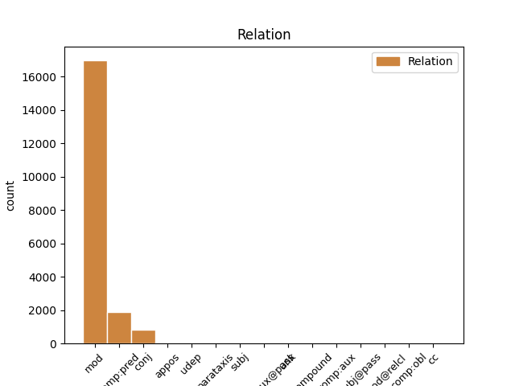
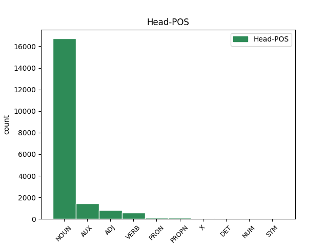
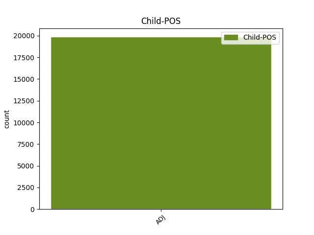

Distribution of features within this leaf



Agreement Rules sorted by frequency.
- When the dependent token is the modifer(mod) of the head token, and the dependent token is ADJ.
1 En _ _ _ _ 0 _ _ _
2 1991 _ _ _ _ 0 _ _ _
3 , _ _ _ _ 0 _ _ _
4 como _ _ _ _ 0 _ _ _
5 ya _ _ _ _ 0 _ _ _
6 está _ _ _ _ 0 _ _ _
7 indicado _ _ _ _ 0 _ _ _
8 en _ _ _ _ 0 _ _ _
9 el _ _ _ _ 0 _ _ _
10 párrafo _ _ _ _ 0 _ _ _
11 anterior _ _ _ _ 0 _ _ _
12 , _ _ _ _ 0 _ _ _
13 se _ _ _ _ 0 _ _ _
14 creó _ _ _ _ 0 _ _ _
15 un _ _ _ _ 0 _ _ _
16 equipo equipo NOUN _ Gender=Masc|Number=Sing 0 _ _ _
17 ad ad ADJ _ Gender=Masc|Number=Sing 16 mod _ _
18 hoc _ _ _ _ 0 _ _ _
19 para _ _ _ _ 0 _ _ _
20 averiguar _ _ _ _ 0 _ _ _
21 como _ _ _ _ 0 _ _ _
22 se _ _ _ _ 0 _ _ _
23 podía _ _ _ _ 0 _ _ _
24 desarrollar _ _ _ _ 0 _ _ _
25 el _ _ _ _ 0 _ _ _
26 Dialogo _ _ _ _ 0 _ _ _
27 Social _ _ _ _ 0 _ _ _
28 , _ _ _ _ 0 _ _ _
29 este _ _ _ _ 0 _ _ _
30 equipo _ _ _ _ 0 _ _ _
31 estaba _ _ _ _ 0 _ _ _
32 formado _ _ _ _ 0 _ _ _
33 por _ _ _ _ 0 _ _ _
34 representantes _ _ _ _ 0 _ _ _
35 de _ _ _ _ 0 _ _ _
36 todas _ _ _ _ 0 _ _ _
37 las _ _ _ _ 0 _ _ _
38 organizaciones _ _ _ _ 0 _ _ _
39 relacionadas _ _ _ _ 0 _ _ _
40 con _ _ _ _ 0 _ _ _
41 CES _ _ _ _ 0 _ _ _
42 , _ _ _ _ 0 _ _ _
43 UNICE _ _ _ _ 0 _ _ _
44 y _ _ _ _ 0 _ _ _
45 CEEP _ _ _ _ 0 _ _ _
46 ; _ _ _ _ 0 _ _ _
1 En _ _ _ _ 0 _ _ _
2 1991 _ _ _ _ 0 _ _ _
3 , _ _ _ _ 0 _ _ _
4 como _ _ _ _ 0 _ _ _
5 ya _ _ _ _ 0 _ _ _
6 está estar AUX _ Mood=Ind|Number=Sing|Person=3|Tense=Pres|VerbForm=Fin 0 _ _ _
7 indicado indicado ADJ _ Gender=Masc|Number=Sing|VerbForm=Part 6 comp:pred _ _
8 en _ _ _ _ 0 _ _ _
9 el _ _ _ _ 0 _ _ _
10 párrafo _ _ _ _ 0 _ _ _
11 anterior _ _ _ _ 0 _ _ _
12 , _ _ _ _ 0 _ _ _
13 se _ _ _ _ 0 _ _ _
14 creó _ _ _ _ 0 _ _ _
15 un _ _ _ _ 0 _ _ _
16 equipo _ _ _ _ 0 _ _ _
17 ad _ _ _ _ 0 _ _ _
18 hoc _ _ _ _ 0 _ _ _
19 para _ _ _ _ 0 _ _ _
20 averiguar _ _ _ _ 0 _ _ _
21 como _ _ _ _ 0 _ _ _
22 se _ _ _ _ 0 _ _ _
23 podía _ _ _ _ 0 _ _ _
24 desarrollar _ _ _ _ 0 _ _ _
25 el _ _ _ _ 0 _ _ _
26 Dialogo _ _ _ _ 0 _ _ _
27 Social _ _ _ _ 0 _ _ _
28 , _ _ _ _ 0 _ _ _
29 este _ _ _ _ 0 _ _ _
30 equipo _ _ _ _ 0 _ _ _
31 estaba _ _ _ _ 0 _ _ _
32 formado _ _ _ _ 0 _ _ _
33 por _ _ _ _ 0 _ _ _
34 representantes _ _ _ _ 0 _ _ _
35 de _ _ _ _ 0 _ _ _
36 todas _ _ _ _ 0 _ _ _
37 las _ _ _ _ 0 _ _ _
38 organizaciones _ _ _ _ 0 _ _ _
39 relacionadas _ _ _ _ 0 _ _ _
40 con _ _ _ _ 0 _ _ _
41 CES _ _ _ _ 0 _ _ _
42 , _ _ _ _ 0 _ _ _
43 UNICE _ _ _ _ 0 _ _ _
44 y _ _ _ _ 0 _ _ _
45 CEEP _ _ _ _ 0 _ _ _
46 ; _ _ _ _ 0 _ _ _
1 Esta _ _ _ _ 0 _ _ _
2 teoría _ _ _ _ 0 _ _ _
3 se _ _ _ _ 0 _ _ _
4 avenía _ _ _ _ 0 _ _ _
5 bien _ _ _ _ 0 _ _ _
6 con _ _ _ _ 0 _ _ _
7 la _ _ _ _ 0 _ _ _
8 creencia _ _ _ _ 0 _ _ _
9 de _ _ _ _ 0 _ _ _
10 el _ _ _ _ 0 _ _ _
11 Romanticismo _ _ _ _ 0 _ _ _
12 en _ _ _ _ 0 _ _ _
13 un _ _ _ _ 0 _ _ _
14 volkgeist _ _ _ _ 0 _ _ _
15 , _ _ _ _ 0 _ _ _
16 " _ _ _ _ 0 _ _ _
17 genio _ _ _ _ 0 _ _ _
18 o _ _ _ _ 0 _ _ _
19 espíritu _ _ _ _ 0 _ _ _
20 de _ _ _ _ 0 _ _ _
21 el _ _ _ _ 0 _ _ _
22 pueblo _ _ _ _ 0 _ _ _
23 " _ _ _ _ 0 _ _ _
24 , _ _ _ _ 0 _ _ _
25 autor _ _ _ _ 0 _ _ _
26 colectivo colectivo ADJ _ Gender=Masc|Number=Sing 0 _ _ _
27 y _ _ _ _ 0 _ _ _
28 anónimo anónimo ADJ _ Gender=Masc|Number=Sing 26 conj _ _
29 de _ _ _ _ 0 _ _ _
30 una _ _ _ _ 0 _ _ _
31 poesía _ _ _ _ 0 _ _ _
32 nacional _ _ _ _ 0 _ _ _
33 . _ _ _ _ 0 _ _ _
1 El _ _ _ _ 0 _ _ _
2 actual _ _ _ _ 0 _ _ _
3 escudo _ _ _ _ 0 _ _ _
4 está _ _ _ _ 0 _ _ _
5 formado _ _ _ _ 0 _ _ _
6 por _ _ _ _ 0 _ _ _
7 dos _ _ _ _ 0 _ _ _
8 círculos _ _ _ _ 0 _ _ _
9 concéntricos _ _ _ _ 0 _ _ _
10 con _ _ _ _ 0 _ _ _
11 la _ _ _ _ 0 _ _ _
12 leyenda _ _ _ _ 0 _ _ _
13 GIRONA _ _ _ _ 0 _ _ _
14 FC _ _ _ _ 0 _ _ _
15 en _ _ _ _ 0 _ _ _
16 blanco _ _ _ _ 0 _ _ _
17 sobre _ _ _ _ 0 _ _ _
18 fondo _ _ _ _ 0 _ _ _
19 rojo _ _ _ _ 0 _ _ _
20 , _ _ _ _ 0 _ _ _
21 el _ _ _ _ 0 _ _ _
22 círculo _ _ _ _ 0 _ _ _
23 interior _ _ _ _ 0 _ _ _
24 esta _ _ _ _ 0 _ _ _
25 cruzado _ _ _ _ 0 _ _ _
26 por _ _ _ _ 0 _ _ _
27 19 _ _ _ _ 0 _ _ _
28 franjas _ _ _ _ 0 _ _ _
29 , _ _ _ _ 0 _ _ _
30 10 _ _ _ _ 0 _ _ _
31 blancas _ _ _ _ 0 _ _ _
32 y _ _ _ _ 0 _ _ _
33 9 _ _ _ _ 0 _ _ _
34 rojas _ _ _ _ 0 _ _ _
35 portando _ _ _ _ 0 _ _ _
36 un _ _ _ _ 0 _ _ _
37 blasón _ _ _ _ 0 _ _ _
38 lonsanjado _ _ _ _ 0 _ _ _
39 de _ _ _ _ 0 _ _ _
40 oro _ _ _ _ 0 _ _ _
41 con _ _ _ _ 0 _ _ _
42 cuatro _ _ _ _ 0 _ _ _
43 palos palo NOUN _ Gender=Masc|Number=Plur 0 _ _ _
44 verticales _ _ _ _ 0 _ _ _
45 gules gul ADJ _ Gender=Masc|Number=Plur 43 appos _ _
46 y _ _ _ _ 0 _ _ _
47 escusón _ _ _ _ 0 _ _ _
48 central _ _ _ _ 0 _ _ _
49 cuadrilongo _ _ _ _ 0 _ _ _
50 ibérico _ _ _ _ 0 _ _ _
51 verado _ _ _ _ 0 _ _ _
52 de _ _ _ _ 0 _ _ _
53 ondas _ _ _ _ 0 _ _ _
54 rojas _ _ _ _ 0 _ _ _
55 y _ _ _ _ 0 _ _ _
56 blancas _ _ _ _ 0 _ _ _
57 . _ _ _ _ 0 _ _ _
1 Contrario contrario ADJ _ Gender=Masc|Number=Sing 23 udep _ _
2 a _ _ _ _ 0 _ _ _
3 cualquiera _ _ _ _ 0 _ _ _
4 otra _ _ _ _ 0 _ _ _
5 apreciación _ _ _ _ 0 _ _ _
6 que _ _ _ _ 0 _ _ _
7 le _ _ _ _ 0 _ _ _
8 de _ _ _ _ 0 _ _ _
9 relevancia _ _ _ _ 0 _ _ _
10 o _ _ _ _ 0 _ _ _
11 sentido _ _ _ _ 0 _ _ _
12 ( _ _ _ _ 0 _ _ _
13 por _ _ _ _ 0 _ _ _
14 ejemplo _ _ _ _ 0 _ _ _
15 , _ _ _ _ 0 _ _ _
16 que _ _ _ _ 0 _ _ _
17 sea _ _ _ _ 0 _ _ _
18 " _ _ _ _ 0 _ _ _
19 hermoso _ _ _ _ 0 _ _ _
20 " _ _ _ _ 0 _ _ _
21 ) _ _ _ _ 0 _ _ _
22 posiblemente _ _ _ _ 0 _ _ _
23 genere generar VERB _ Mood=Ind|Number=Sing|Person=3|Tense=Pres|VerbForm=Fin 0 _ _ _
24 alguna _ _ _ _ 0 _ _ _
25 objeción _ _ _ _ 0 _ _ _
26 o _ _ _ _ 0 _ _ _
27 contradicción _ _ _ _ 0 _ _ _
28 . _ _ _ _ 0 _ _ _
1 También _ _ _ _ 0 _ _ _
2 el _ _ _ _ 0 _ _ _
3 estar _ _ _ _ 0 _ _ _
4 cerca _ _ _ _ 0 _ _ _
5 de _ _ _ _ 0 _ _ _
6 la _ _ _ _ 0 _ _ _
7 costa _ _ _ _ 0 _ _ _
8 y _ _ _ _ 0 _ _ _
9 cerca _ _ _ _ 0 _ _ _
10 de _ _ _ _ 0 _ _ _
11 la _ _ _ _ 0 _ _ _
12 montaña _ _ _ _ 0 _ _ _
13 también _ _ _ _ 0 _ _ _
14 es ser AUX _ Mood=Ind|Number=Sing|Person=3|Tense=Pres|VerbForm=Fin 0 _ _ _
15 una _ _ _ _ 0 _ _ _
16 ventaja _ _ _ _ 0 _ _ _
17 a _ _ _ _ 0 _ _ _
18 la _ _ _ _ 0 _ _ _
19 hora _ _ _ _ 0 _ _ _
20 de _ _ _ _ 0 _ _ _
21 mover _ _ _ _ 0 _ _ _
22 te _ _ _ _ 0 _ _ _
23 , _ _ _ _ 0 _ _ _
24 en _ _ _ _ 0 _ _ _
25 fin _ _ _ _ 0 _ _ _
26 muy _ _ _ _ 0 _ _ _
27 recomendable recomendable ADJ _ Number=Sing 14 parataxis _ SpaceAfter=No
28 . _ _ _ _ 0 _ _ _
1 De _ _ _ _ 0 _ _ _
2 los _ _ _ _ 0 _ _ _
3 546 _ _ _ _ 0 _ _ _
4 habitantes _ _ _ _ 0 _ _ _
5 , _ _ _ _ 0 _ _ _
6 Chester _ _ _ _ 0 _ _ _
7 estaba estar AUX _ Mood=Ind|Number=Sing|Person=3|Tense=Imp|VerbForm=Fin 0 _ _ _
8 compuesto compuesto ADJ _ Gender=Masc|Number=Sing|VerbForm=Part 7 comp:aux@pass _ _
9 por _ _ _ _ 0 _ _ _
10 el _ _ _ _ 0 _ _ _
11 98.72 _ _ _ _ 0 _ _ _
12 % _ _ _ _ 0 _ _ _
13 blancos _ _ _ _ 0 _ _ _
14 , _ _ _ _ 0 _ _ _
15 el _ _ _ _ 0 _ _ _
16 0 _ _ _ _ 0 _ _ _
17 % _ _ _ _ 0 _ _ _
18 eran _ _ _ _ 0 _ _ _
19 afroamericanos _ _ _ _ 0 _ _ _
20 , _ _ _ _ 0 _ _ _
21 el _ _ _ _ 0 _ _ _
22 0.37 _ _ _ _ 0 _ _ _
23 % _ _ _ _ 0 _ _ _
24 eran _ _ _ _ 0 _ _ _
25 amerindios _ _ _ _ 0 _ _ _
26 , _ _ _ _ 0 _ _ _
27 el _ _ _ _ 0 _ _ _
28 0.18 _ _ _ _ 0 _ _ _
29 % _ _ _ _ 0 _ _ _
30 eran _ _ _ _ 0 _ _ _
31 asiáticos _ _ _ _ 0 _ _ _
32 , _ _ _ _ 0 _ _ _
33 el _ _ _ _ 0 _ _ _
34 0 _ _ _ _ 0 _ _ _
35 % _ _ _ _ 0 _ _ _
36 eran _ _ _ _ 0 _ _ _
37 isleños _ _ _ _ 0 _ _ _
38 de _ _ _ _ 0 _ _ _
39 el _ _ _ _ 0 _ _ _
40 Pacífico _ _ _ _ 0 _ _ _
41 , _ _ _ _ 0 _ _ _
42 el _ _ _ _ 0 _ _ _
43 0 _ _ _ _ 0 _ _ _
44 % _ _ _ _ 0 _ _ _
45 eran _ _ _ _ 0 _ _ _
46 de _ _ _ _ 0 _ _ _
47 otras _ _ _ _ 0 _ _ _
48 razas _ _ _ _ 0 _ _ _
49 y _ _ _ _ 0 _ _ _
50 el _ _ _ _ 0 _ _ _
51 0.73 _ _ _ _ 0 _ _ _
52 % _ _ _ _ 0 _ _ _
53 pertenecían _ _ _ _ 0 _ _ _
54 a _ _ _ _ 0 _ _ _
55 dos _ _ _ _ 0 _ _ _
56 o _ _ _ _ 0 _ _ _
57 más _ _ _ _ 0 _ _ _
58 razas _ _ _ _ 0 _ _ _
59 . _ _ _ _ 0 _ _ _
1 Recientemente _ _ _ _ 0 _ _ _
2 la _ _ _ _ 0 _ _ _
3 Agencia _ _ _ _ 0 _ _ _
4 Espacial _ _ _ _ 0 _ _ _
5 Europea _ _ _ _ 0 _ _ _
6 ha _ _ _ _ 0 _ _ _
7 tratado _ _ _ _ 0 _ _ _
8 de _ _ _ _ 0 _ _ _
9 encontrar _ _ _ _ 0 _ _ _
10 nuevas _ _ _ _ 0 _ _ _
11 opciones _ _ _ _ 0 _ _ _
12 , _ _ _ _ 0 _ _ _
13 en _ _ _ _ 0 _ _ _
14 términos _ _ _ _ 0 _ _ _
15 de _ _ _ _ 0 _ _ _
16 combinaciones _ _ _ _ 0 _ _ _
17 propelente _ _ _ _ 0 _ _ _
18 / _ _ _ _ 0 _ _ _
19 oxidante _ _ _ _ 0 _ _ _
20 , _ _ _ _ 0 _ _ _
21 para _ _ _ _ 0 _ _ _
22 evitar _ _ _ _ 0 _ _ _
23 que _ _ _ _ 0 _ _ _
24 se _ _ _ _ 0 _ _ _
25 usen usar VERB _ Mood=Sub|Number=Plur|Person=3|Tense=Imp|VerbForm=Fin 0 _ _ _
26 químicos químico ADJ _ Gender=Masc|Number=Plur 25 subj _ _
27 venenosos _ _ _ _ 0 _ _ _
28 como _ _ _ _ 0 _ _ _
29 este _ _ _ _ 0 _ _ _
30 y _ _ _ _ 0 _ _ _
31 sus _ _ _ _ 0 _ _ _
32 derivados _ _ _ _ 0 _ _ _
33 . _ _ _ _ 0 _ _ _
1 Una _ _ _ _ 0 _ _ _
2 palabra _ _ _ _ 0 _ _ _
3 consistiendo _ _ _ _ 0 _ _ _
4 de _ _ _ _ 0 _ _ _
5 un _ _ _ _ 0 _ _ _
6 medio medio ADJ _ Gender=Masc|Number=Sing 8 unk _ _
7 " _ _ _ _ 0 _ _ _
8 contador contador NOUN _ Gender=Masc|Number=Sing 0 _ _ _
9 " _ _ _ _ 0 _ _ _
10 y _ _ _ _ 0 _ _ _
11 medio _ _ _ _ 0 _ _ _
12 " _ _ _ _ 0 _ _ _
13 pointer _ _ _ _ 0 _ _ _
14 " _ _ _ _ 0 _ _ _
15 soportaba _ _ _ _ 0 _ _ _
16 regiones _ _ _ _ 0 _ _ _
17 limitadas _ _ _ _ 0 _ _ _
18 de _ _ _ _ 0 _ _ _
19 memoria _ _ _ _ 0 _ _ _
20 , _ _ _ _ 0 _ _ _
21 notablemente _ _ _ _ 0 _ _ _
22 las _ _ _ _ 0 _ _ _
23 pilas _ _ _ _ 0 _ _ _
24 . _ _ _ _ 0 _ _ _
1 Su _ _ _ _ 0 _ _ _
2 primogénito _ _ _ _ 0 _ _ _
3 Francisco _ _ _ _ 0 _ _ _
4 Diego _ _ _ _ 0 _ _ _
5 , _ _ _ _ 0 _ _ _
6 renunció _ _ _ _ 0 _ _ _
7 a _ _ _ _ 0 _ _ _
8 su _ _ _ _ 0 _ _ _
9 herencia _ _ _ _ 0 _ _ _
10 , _ _ _ _ 0 _ _ _
11 títulos _ _ _ _ 0 _ _ _
12 y _ _ _ _ 0 _ _ _
13 estados _ _ _ _ 0 _ _ _
14 y _ _ _ _ 0 _ _ _
15 se _ _ _ _ 0 _ _ _
16 hizo _ _ _ _ 0 _ _ _
17 en _ _ _ _ 0 _ _ _
18 1601 _ _ _ _ 0 _ _ _
19 religioso _ _ _ _ 0 _ _ _
20 en _ _ _ _ 0 _ _ _
21 la _ _ _ _ 0 _ _ _
22 Orden _ _ _ _ 0 _ _ _
23 de _ _ _ _ 0 _ _ _
24 Santo _ _ _ _ 0 _ _ _
25 Domingo _ _ _ _ 0 _ _ _
26 , _ _ _ _ 0 _ _ _
27 donde _ _ _ _ 0 _ _ _
28 tomó _ _ _ _ 0 _ _ _
29 el _ _ _ _ 0 _ _ _
30 nombre _ _ _ _ 0 _ _ _
31 de _ _ _ _ 0 _ _ _
32 fray _ _ _ _ 0 _ _ _
33 Francisco _ _ _ _ 0 _ _ _
34 de _ _ _ _ 0 _ _ _
35 la _ _ _ _ 0 _ _ _
36 Cruz _ _ _ _ 0 _ _ _
37 , _ _ _ _ 0 _ _ _
38 su _ _ _ _ 0 _ _ _
39 segundogénito _ _ _ _ 0 _ _ _
40 Alonso _ _ _ _ 0 _ _ _
41 Diego _ _ _ _ 0 _ _ _
42 fue _ _ _ _ 0 _ _ _
43 su _ _ _ _ 0 _ _ _
44 sucesor _ _ _ _ 0 _ _ _
45 , _ _ _ _ 0 _ _ _
46 y _ _ _ _ 0 _ _ _
47 su _ _ _ _ 0 _ _ _
48 hija _ _ _ _ 0 _ _ _
49 Guiomar _ _ _ _ 0 _ _ _
50 Leonor _ _ _ _ 0 _ _ _
51 Brianda _ _ _ _ 0 _ _ _
52 se _ _ _ _ 0 _ _ _
53 casó _ _ _ _ 0 _ _ _
54 con _ _ _ _ 0 _ _ _
55 su _ _ _ _ 0 _ _ _
56 primo primo NOUN _ Gender=Masc|Number=Sing 0 _ _ _
57 hermano hermano ADJ _ Gender=Masc|Number=Sing 56 compound _ _
58 Francisco _ _ _ _ 0 _ _ _
59 Antonio _ _ _ _ 0 _ _ _
60 Silvestre _ _ _ _ 0 _ _ _
61 de _ _ _ _ 0 _ _ _
62 Zúñiga _ _ _ _ 0 _ _ _
63 Sotomayor _ _ _ _ 0 _ _ _
64 , _ _ _ _ 0 _ _ _
65 V _ _ _ _ 0 _ _ _
66 marqués _ _ _ _ 0 _ _ _
67 de _ _ _ _ 0 _ _ _
68 Ayamonte _ _ _ _ 0 _ _ _
69 , _ _ _ _ 0 _ _ _
70 sin _ _ _ _ 0 _ _ _
71 sucesión _ _ _ _ 0 _ _ _
72 en _ _ _ _ 0 _ _ _
73 su _ _ _ _ 0 _ _ _
74 matrimonio _ _ _ _ 0 _ _ _
75 . _ _ _ _ 0 _ _ _
1 Huitzil _ _ _ _ 0 _ _ _
2 es _ _ _ _ 0 _ _ _
3 derrotado _ _ _ _ 0 _ _ _
4 por _ _ _ _ 0 _ _ _
5 Jedah _ _ _ _ 0 _ _ _
6 , _ _ _ _ 0 _ _ _
7 pero _ _ _ _ 0 _ _ _
8 antes _ _ _ _ 0 _ _ _
9 de _ _ _ _ 0 _ _ _
10 su _ _ _ _ 0 _ _ _
11 muerte _ _ _ _ 0 _ _ _
12 , _ _ _ _ 0 _ _ _
13 ordena _ _ _ _ 0 _ _ _
14 a _ _ _ _ 0 _ _ _
15 todos _ _ _ _ 0 _ _ _
16 los _ _ _ _ 0 _ _ _
17 robots _ _ _ _ 0 _ _ _
18 Huitzil _ _ _ _ 0 _ _ _
19 para _ _ _ _ 0 _ _ _
20 que _ _ _ _ 0 _ _ _
21 protejan _ _ _ _ 0 _ _ _
22 a _ _ _ _ 0 _ _ _
23 Cecil _ _ _ _ 0 _ _ _
24 pero _ _ _ _ 0 _ _ _
25 uno _ _ _ _ 0 _ _ _
26 decide _ _ _ _ 0 _ _ _
27 buscar _ _ _ _ 0 _ _ _
28 cual _ _ _ _ 0 _ _ _
29 es _ _ _ _ 0 _ _ _
30 su _ _ _ _ 0 _ _ _
31 propósito _ _ _ _ 0 _ _ _
32 y _ _ _ _ 0 _ _ _
33 en _ _ _ _ 0 _ _ _
34 eso _ _ _ _ 0 _ _ _
35 se _ _ _ _ 0 _ _ _
36 encuentra _ _ _ _ 0 _ _ _
37 a _ _ _ _ 0 _ _ _
38 Morrigan _ _ _ _ 0 _ _ _
39 Aensland _ _ _ _ 0 _ _ _
40 y _ _ _ _ 0 _ _ _
41 está estar AUX _ Mood=Ind|Number=Sing|Person=3|Tense=Pres|VerbForm=Fin 0 _ _ _
42 decidido decidido ADJ _ Gender=Masc|Number=Sing|VerbForm=Part 41 comp:aux _ _
43 proteger _ _ _ _ 0 _ _ _
44 a _ _ _ _ 0 _ _ _
45 sus _ _ _ _ 0 _ _ _
46 amigos _ _ _ _ 0 _ _ _
47 de _ _ _ _ 0 _ _ _
48 todo _ _ _ _ 0 _ _ _
49 mal _ _ _ _ 0 _ _ _
50 . _ _ _ _ 0 _ _ _
1 Comienzan _ _ _ _ 0 _ _ _
2 serias _ _ _ _ 0 _ _ _
3 discusiones _ _ _ _ 0 _ _ _
4 con _ _ _ _ 0 _ _ _
5 Daniel _ _ _ _ 0 _ _ _
6 y _ _ _ _ 0 _ _ _
7 la _ _ _ _ 0 _ _ _
8 desgracia _ _ _ _ 0 _ _ _
9 no _ _ _ _ 0 _ _ _
10 se _ _ _ _ 0 _ _ _
11 hace _ _ _ _ 0 _ _ _
12 esperar _ _ _ _ 0 _ _ _
13 , _ _ _ _ 0 _ _ _
14 en _ _ _ _ 0 _ _ _
15 una _ _ _ _ 0 _ _ _
16 noche _ _ _ _ 0 _ _ _
17 Valeria _ _ _ _ 0 _ _ _
18 se _ _ _ _ 0 _ _ _
19 encierra _ _ _ _ 0 _ _ _
20 en _ _ _ _ 0 _ _ _
21 su _ _ _ _ 0 _ _ _
22 habitación habitación NOUN _ Gender=Fem|Number=Sing 0 _ _ _
23 donde _ _ _ _ 0 _ _ _
24 Daniel _ _ _ _ 0 _ _ _
25 la _ _ _ _ 0 _ _ _
26 encuentra _ _ _ _ 0 _ _ _
27 inconsciente inconsciente ADJ _ Number=Sing 22 mod@relcl _ _
28 por _ _ _ _ 0 _ _ _
29 lo _ _ _ _ 0 _ _ _
30 que _ _ _ _ 0 _ _ _
31 es _ _ _ _ 0 _ _ _
32 hospitalizada _ _ _ _ 0 _ _ _
33 de _ _ _ _ 0 _ _ _
34 nuevo _ _ _ _ 0 _ _ _
35 y _ _ _ _ 0 _ _ _
36 le _ _ _ _ 0 _ _ _
37 amputan _ _ _ _ 0 _ _ _
38 la _ _ _ _ 0 _ _ _
39 pierna _ _ _ _ 0 _ _ _
40 debido _ _ _ _ 0 _ _ _
41 a _ _ _ _ 0 _ _ _
42 que _ _ _ _ 0 _ _ _
43 se _ _ _ _ 0 _ _ _
44 le _ _ _ _ 0 _ _ _
45 desarrolló _ _ _ _ 0 _ _ _
46 una _ _ _ _ 0 _ _ _
47 gangrena _ _ _ _ 0 _ _ _
48 en _ _ _ _ 0 _ _ _
49 ella _ _ _ _ 0 _ _ _
50 , _ _ _ _ 0 _ _ _
51 tras _ _ _ _ 0 _ _ _
52 una _ _ _ _ 0 _ _ _
53 trombosis _ _ _ _ 0 _ _ _
54 generada _ _ _ _ 0 _ _ _
55 por _ _ _ _ 0 _ _ _
56 el _ _ _ _ 0 _ _ _
57 esfuerzo _ _ _ _ 0 _ _ _
58 de _ _ _ _ 0 _ _ _
59 Valeria _ _ _ _ 0 _ _ _
60 en _ _ _ _ 0 _ _ _
61 buscar _ _ _ _ 0 _ _ _
62 a _ _ _ _ 0 _ _ _
63 Richie _ _ _ _ 0 _ _ _
64 . _ _ _ _ 0 _ _ _
1 Los _ _ _ _ 0 _ _ _
2 pueblos _ _ _ _ 0 _ _ _
3 tuareg _ _ _ _ 0 _ _ _
4 también _ _ _ _ 0 _ _ _
5 se _ _ _ _ 0 _ _ _
6 había _ _ _ _ 0 _ _ _
7 quejado _ _ _ _ 0 _ _ _
8 de _ _ _ _ 0 _ _ _
9 la _ _ _ _ 0 _ _ _
10 marginación _ _ _ _ 0 _ _ _
11 dentro _ _ _ _ 0 _ _ _
12 de _ _ _ _ 0 _ _ _
13 Malí _ _ _ _ 0 _ _ _
14 , _ _ _ _ 0 _ _ _
15 así _ _ _ _ 0 _ _ _
16 como _ _ _ _ 0 _ _ _
17 basado _ _ _ _ 0 _ _ _
18 en _ _ _ _ 0 _ _ _
19 los _ _ _ _ 0 _ _ _
20 acuerdos _ _ _ _ 0 _ _ _
21 anteriores _ _ _ _ 0 _ _ _
22 para _ _ _ _ 0 _ _ _
23 poner _ _ _ _ 0 _ _ _
24 fin _ _ _ _ 0 _ _ _
25 a _ _ _ _ 0 _ _ _
26 las _ _ _ _ 0 _ _ _
27 rebeliones _ _ _ _ 0 _ _ _
28 tuareg _ _ _ _ 0 _ _ _
29 los _ _ _ _ 0 _ _ _
30 últimos último ADJ _ Gender=Masc|Number=Plur 31 subj@pass _ _
31 fueron ser AUX _ Mood=Ind|Number=Plur|Person=3|Tense=Past|VerbForm=Fin 0 _ _ _
32 violados _ _ _ _ 0 _ _ _
33 por _ _ _ _ 0 _ _ _
34 Malí _ _ _ _ 0 _ _ _
35 , _ _ _ _ 0 _ _ _
36 un _ _ _ _ 0 _ _ _
37 reclamo _ _ _ _ 0 _ _ _
38 Malí _ _ _ _ 0 _ _ _
39 lo _ _ _ _ 0 _ _ _
40 niega _ _ _ _ 0 _ _ _
41 . _ _ _ _ 0 _ _ _
1 Eudial _ _ _ _ 0 _ _ _
2 es _ _ _ _ 0 _ _ _
3 la _ _ _ _ 0 _ _ _
4 primera _ _ _ _ 0 _ _ _
5 y _ _ _ _ 0 _ _ _
6 la el DET _ Definite=Def|Gender=Fem|Number=Sing|PronType=Art 0 _ _ _
7 mayor mayor ADJ _ Degree=Cmp|Number=Sing 6 cc _ _
8 de _ _ _ _ 0 _ _ _
9 las _ _ _ _ 0 _ _ _
10 5 _ _ _ _ 0 _ _ _
11 brujas _ _ _ _ 0 _ _ _
12 que _ _ _ _ 0 _ _ _
13 comienza _ _ _ _ 0 _ _ _
14 a _ _ _ _ 0 _ _ _
15 buscar _ _ _ _ 0 _ _ _
16 los _ _ _ _ 0 _ _ _
17 talismanes _ _ _ _ 0 _ _ _
18 por _ _ _ _ 0 _ _ _
19 encargo _ _ _ _ 0 _ _ _
20 de _ _ _ _ 0 _ _ _
21 el _ _ _ _ 0 _ _ _
22 profesor _ _ _ _ 0 _ _ _
23 Tomoe _ _ _ _ 0 _ _ _
24 . _ _ _ _ 0 _ _ _
1 El _ _ _ _ 0 _ _ _
2 diseño _ _ _ _ 0 _ _ _
3 de _ _ _ _ 0 _ _ _
4 la _ _ _ _ 0 _ _ _
5 obra _ _ _ _ 0 _ _ _
6 se _ _ _ _ 0 _ _ _
7 debió _ _ _ _ 0 _ _ _
8 en _ _ _ _ 0 _ _ _
9 1759 _ _ _ _ 0 _ _ _
10 a _ _ _ _ 0 _ _ _
11 el _ _ _ _ 0 _ _ _
12 arquitecto arquitecto NOUN _ Gender=Masc|Number=Sing 0 _ _ _
13 francés francés ADJ _ Gender=Masc|Number=Sing 12 comp:obl _ _
14 Luis _ _ _ _ 0 _ _ _
15 Guilbert _ _ _ _ 0 _ _ _
16 , _ _ _ _ 0 _ _ _
17 sustituido _ _ _ _ 0 _ _ _
18 a _ _ _ _ 0 _ _ _
19 el _ _ _ _ 0 _ _ _
20 año _ _ _ _ 0 _ _ _
21 siguiente _ _ _ _ 0 _ _ _
22 por _ _ _ _ 0 _ _ _
23 el _ _ _ _ 0 _ _ _
24 también _ _ _ _ 0 _ _ _
25 francés _ _ _ _ 0 _ _ _
26 Baltasar _ _ _ _ 0 _ _ _
27 Devretón _ _ _ _ 0 _ _ _
28 . _ _ _ _ 0 _ _ _
Disagree Examples:
1 Los _ _ _ _ 0 _ _ _
2 pacientes _ _ _ _ 0 _ _ _
3 con _ _ _ _ 0 _ _ _
4 diabetes _ _ _ _ 0 _ _ _
5 son _ _ _ _ 0 _ _ _
6 cuatro _ _ _ _ 0 _ _ _
7 veces _ _ _ _ 0 _ _ _
8 más _ _ _ _ 0 _ _ _
9 propensos _ _ _ _ 0 _ _ _
10 a _ _ _ _ 0 _ _ _
11 desarrollar _ _ _ _ 0 _ _ _
12 enfermedad enfermedad NOUN _ Gender=Fem|Number=Sing 0 _ _ _
13 cardíacas cardíaca ADJ _ Gender=Fem|Number=Plur 12 mod _ _
14 que _ _ _ _ 0 _ _ _
15 aquellos _ _ _ _ 0 _ _ _
16 que _ _ _ _ 0 _ _ _
17 no _ _ _ _ 0 _ _ _
18 tienen _ _ _ _ 0 _ _ _
19 diabetes _ _ _ _ 0 _ _ _
20 . _ _ _ _ 0 _ _ _
1 Vuelve _ _ _ _ 0 _ _ _
2 a _ _ _ _ 0 _ _ _
3 salir _ _ _ _ 0 _ _ _
4 con _ _ _ _ 0 _ _ _
5 su _ _ _ _ 0 _ _ _
6 amigo _ _ _ _ 0 _ _ _
7 el _ _ _ _ 0 _ _ _
8 día _ _ _ _ 0 _ _ _
9 de _ _ _ _ 0 _ _ _
10 San _ _ _ _ 0 _ _ _
11 Patricio _ _ _ _ 0 _ _ _
12 y _ _ _ _ 0 _ _ _
13 pasan _ _ _ _ 0 _ _ _
14 la _ _ _ _ 0 _ _ _
15 noche _ _ _ _ 0 _ _ _
16 en _ _ _ _ 0 _ _ _
17 un _ _ _ _ 0 _ _ _
18 pub _ _ _ _ 0 _ _ _
19 donde _ _ _ _ 0 _ _ _
20 años _ _ _ _ 0 _ _ _
21 más _ _ _ _ 0 _ _ _
22 tarde _ _ _ _ 0 _ _ _
23 sabrá _ _ _ _ 0 _ _ _
24 que _ _ _ _ 0 _ _ _
25 también _ _ _ _ 0 _ _ _
26 estuvo _ _ _ _ 0 _ _ _
27 la _ _ _ _ 0 _ _ _
28 madre _ _ _ _ 0 _ _ _
29 de _ _ _ _ 0 _ _ _
30 sus _ _ _ _ 0 _ _ _
31 hijos _ _ _ _ 0 _ _ _
32 , _ _ _ _ 0 _ _ _
33 que _ _ _ _ 0 _ _ _
34 se _ _ _ _ 0 _ _ _
35 deja _ _ _ _ 0 _ _ _
36 allí _ _ _ _ 0 _ _ _
37 un _ _ _ _ 0 _ _ _
38 paraguas paragua NOUN _ Gender=Fem|Number=Plur 0 _ _ _
39 amarillo amarillo ADJ _ Gender=Masc|Number=Sing 38 mod _ _
40 que _ _ _ _ 0 _ _ _
41 Ted _ _ _ _ 0 _ _ _
42 cogerá _ _ _ _ 0 _ _ _
43 para _ _ _ _ 0 _ _ _
44 resguardar _ _ _ _ 0 _ _ _
45 se _ _ _ _ 0 _ _ _
46 de _ _ _ _ 0 _ _ _
47 la _ _ _ _ 0 _ _ _
48 lluvia _ _ _ _ 0 _ _ _
49 . _ _ _ _ 0 _ _ _
1 El _ _ _ _ 0 _ _ _
2 diseño _ _ _ _ 0 _ _ _
3 es _ _ _ _ 0 _ _ _
4 mezcla _ _ _ _ 0 _ _ _
5 de _ _ _ _ 0 _ _ _
6 los _ _ _ _ 0 _ _ _
7 estilos estilo NOUN _ Gender=Masc|Number=Plur 0 _ _ _
8 arquitectónicos _ _ _ _ 0 _ _ _
9 federal federal ADJ _ Number=Sing 7 mod _ SpaceAfter=No
10 , _ _ _ _ 0 _ _ _
11 griego _ _ _ _ 0 _ _ _
12 y _ _ _ _ 0 _ _ _
13 gótico _ _ _ _ 0 _ _ _
14 . _ _ _ _ 0 _ _ _
1 Estoy _ _ _ _ 0 _ _ _
2 muy _ _ _ _ 0 _ _ _
3 contento _ _ _ _ 0 _ _ _
4 de _ _ _ _ 0 _ _ _
5 poder _ _ _ _ 0 _ _ _
6 trabajar _ _ _ _ 0 _ _ _
7 con _ _ _ _ 0 _ _ _
8 ellos _ _ _ _ 0 _ _ _
9 , _ _ _ _ 0 _ _ _
10 trato trato NOUN _ Gender=Masc|Number=Sing 0 _ _ _
11 cercano _ _ _ _ 0 _ _ _
12 y _ _ _ _ 0 _ _ _
13 muy _ _ _ _ 0 _ _ _
14 eficientes eficiente ADJ _ Number=Plur 10 conj _ SpaceAfter=No
15 . _ _ _ _ 0 _ _ _
1 A _ _ _ _ 0 _ _ _
2 la _ _ _ _ 0 _ _ _
3 hora _ _ _ _ 0 _ _ _
4 de _ _ _ _ 0 _ _ _
5 poner _ _ _ _ 0 _ _ _
6 en _ _ _ _ 0 _ _ _
7 orden _ _ _ _ 0 _ _ _
8 los _ _ _ _ 0 _ _ _
9 deslavazados _ _ _ _ 0 _ _ _
10 datos _ _ _ _ 0 _ _ _
11 que _ _ _ _ 0 _ _ _
12 nos _ _ _ _ 0 _ _ _
13 han _ _ _ _ 0 _ _ _
14 llegado _ _ _ _ 0 _ _ _
15 de _ _ _ _ 0 _ _ _
16 el _ _ _ _ 0 _ _ _
17 nacimiento _ _ _ _ 0 _ _ _
18 y _ _ _ _ 0 _ _ _
19 desenvolvimiento _ _ _ _ 0 _ _ _
20 de _ _ _ _ 0 _ _ _
21 la _ _ _ _ 0 _ _ _
22 antigua _ _ _ _ 0 _ _ _
23 Hermandad _ _ _ _ 0 _ _ _
24 de _ _ _ _ 0 _ _ _
25 la _ _ _ _ 0 _ _ _
26 Vera _ _ _ _ 0 _ _ _
27 - _ _ _ _ 0 _ _ _
28 Cruz _ _ _ _ 0 _ _ _
29 de _ _ _ _ 0 _ _ _
30 Arahal _ _ _ _ 0 _ _ _
31 , _ _ _ _ 0 _ _ _
32 y _ _ _ _ 0 _ _ _
33 convertir _ _ _ _ 0 _ _ _
34 éstos _ _ _ _ 0 _ _ _
35 en _ _ _ _ 0 _ _ _
36 hitos _ _ _ _ 0 _ _ _
37 entre _ _ _ _ 0 _ _ _
38 los _ _ _ _ 0 _ _ _
39 cuales _ _ _ _ 0 _ _ _
40 en _ _ _ _ 0 _ _ _
41 tiempo tiempo NOUN _ Gender=Masc|Number=Sing 0 _ _ _
42 venideros venidero ADJ _ Gender=Masc|Number=Plur 41 mod _ SpaceAfter=No
43 , _ _ _ _ 0 _ _ _
44 podamos _ _ _ _ 0 _ _ _
45 intercalar _ _ _ _ 0 _ _ _
46 los _ _ _ _ 0 _ _ _
47 que _ _ _ _ 0 _ _ _
48 nos _ _ _ _ 0 _ _ _
49 ofrezca _ _ _ _ 0 _ _ _
50 una _ _ _ _ 0 _ _ _
51 posterior _ _ _ _ 0 _ _ _
52 investigación _ _ _ _ 0 _ _ _
53 , _ _ _ _ 0 _ _ _
54 nos _ _ _ _ 0 _ _ _
55 hemos _ _ _ _ 0 _ _ _
56 encontrado _ _ _ _ 0 _ _ _
57 con _ _ _ _ 0 _ _ _
58 que _ _ _ _ 0 _ _ _
59 , _ _ _ _ 0 _ _ _
60 hasta _ _ _ _ 0 _ _ _
61 ahora _ _ _ _ 0 _ _ _
62 , _ _ _ _ 0 _ _ _
63 y _ _ _ _ 0 _ _ _
64 quizá _ _ _ _ 0 _ _ _
65 debido _ _ _ _ 0 _ _ _
66 a _ _ _ _ 0 _ _ _
67 el _ _ _ _ 0 _ _ _
68 tiempo _ _ _ _ 0 _ _ _
69 que _ _ _ _ 0 _ _ _
70 hace _ _ _ _ 0 _ _ _
71 que _ _ _ _ 0 _ _ _
72 dicha _ _ _ _ 0 _ _ _
73 cofradía _ _ _ _ 0 _ _ _
74 no _ _ _ _ 0 _ _ _
75 tiene _ _ _ _ 0 _ _ _
76 vida _ _ _ _ 0 _ _ _
77 , _ _ _ _ 0 _ _ _
78 es _ _ _ _ 0 _ _ _
79 la _ _ _ _ 0 _ _ _
80 de _ _ _ _ 0 _ _ _
81 esta _ _ _ _ 0 _ _ _
82 ciudad _ _ _ _ 0 _ _ _
83 a _ _ _ _ 0 _ _ _
84 la _ _ _ _ 0 _ _ _
85 que _ _ _ _ 0 _ _ _
86 se _ _ _ _ 0 _ _ _
87 le _ _ _ _ 0 _ _ _
88 ha _ _ _ _ 0 _ _ _
89 dedicado _ _ _ _ 0 _ _ _
90 menos _ _ _ _ 0 _ _ _
91 estudio _ _ _ _ 0 _ _ _
92 , _ _ _ _ 0 _ _ _
93 o _ _ _ _ 0 _ _ _
94 si _ _ _ _ 0 _ _ _
95 se _ _ _ _ 0 _ _ _
96 le _ _ _ _ 0 _ _ _
97 ha _ _ _ _ 0 _ _ _
98 hecho _ _ _ _ 0 _ _ _
99 , _ _ _ _ 0 _ _ _
100 desgraciadamente _ _ _ _ 0 _ _ _
101 no _ _ _ _ 0 _ _ _
102 nos _ _ _ _ 0 _ _ _
103 es _ _ _ _ 0 _ _ _
104 conocido _ _ _ _ 0 _ _ _
105 . _ _ _ _ 0 _ _ _